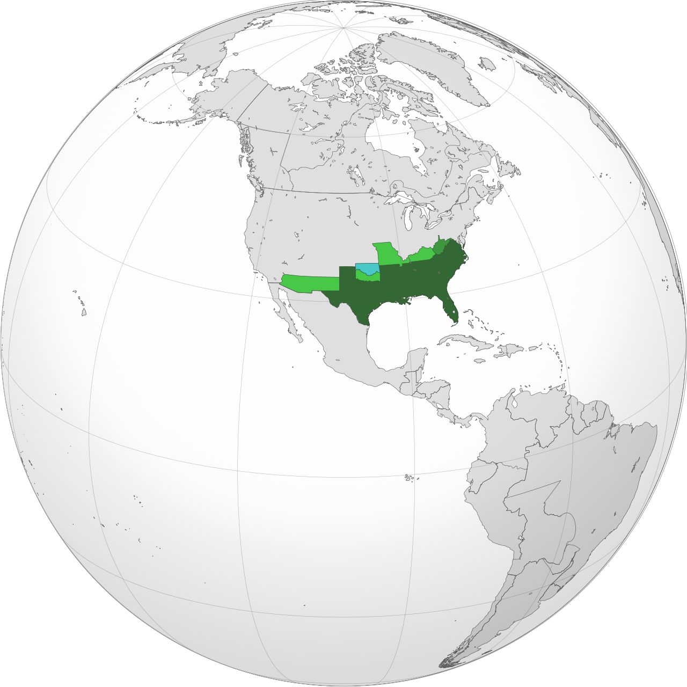

Volume XVIII · 1861 — 1865
Eleven southern states seceded from the United States between December 1860 and June 1861 to defend the institution of slavery, founded a separate national government at Richmond, fought a four-year war against the Union, and were militarily defeated in April 1865. Six hundred thousand soldiers and an unknown number of civilians dead. No country has recognised it, before or since.
Foreword

A republic founded explicitly on the protection of chattel slavery. The Confederate vice-president, Alexander Stephens, said so directly in his Cornerstone Speech of March 1861: "Our new government is founded upon exactly the opposite idea [from the Declaration of Independence]; its foundations are laid, its cornerstone rests, upon the great truth that the negro is not equal to the white man."
The Confederacy is the only state in this library whose founding documents make this proposition explicit, and that fact has been the single most contested item in American memory for the last hundred and sixty years. The first generation of post-war Confederate veterans, organising under the auspices of the United Daughters of the Confederacy and the United Confederate Veterans, deliberately constructed an alternative founding narrative — the "Lost Cause" tradition — which attributed the war to questions of state sovereignty, federalism, and tariffs, and which substantially erased the role of slavery. That tradition still has substantial currency in the American South. It is, on the documentary evidence, false. The Confederate states said clearly, at the moment of secession, that they were seceding to defend slavery; the Confederate constitution made the perpetuation of slavery a national commitment; and the Confederate political class understood the war as a slaveholders' republic's war to survive.
This volume is written in the same factual register as the rest of the library. It does not romanticise the Confederacy; nor does it ignore the genuinely complex history of the southern states, the strategic incompetence of the Union command in 1861–62, the operational brilliance of Robert E. Lee's Army of Northern Virginia, the demographic catastrophe of southern white casualties, or the long ugly afterlife of Reconstruction and Jim Crow. It does insist that the country be understood, before all else, as what it actually was: an attempt to preserve the institution of slavery in perpetuity by force of arms.
Then we go and walk through what remains: Charleston, Richmond, Fort Sumter, Antietam, Gettysburg, Vicksburg, Appomattox Court House. The battlefields are mostly federal parks, well-curated, and worth visiting with both fascination and uncomfortable honesty.
The Book — eight chapters
After the book — three ways to travel inside the Confederacy
The Guide
Charleston and Fort Sumter, Montgomery (the first capital), Richmond (the second), the Petersburg trenches, Appomattox Court House, Gettysburg, Vicksburg, Antietam (Sharpsburg), Shiloh, and the old slave-trading sites of Natchez and New Orleans.
The Routes
The Eastern Theatre Route from Washington DC through Manassas, Fredericksburg, Wilderness, Spotsylvania, Petersburg and Appomattox; and the Western Theatre Route from Cairo IL through Shiloh, Vicksburg, Chattanooga, Atlanta and Savannah.
The Errors
The war was not "really" about states' rights. Lee did not free his slaves. The Confederate flag is not a "heritage" symbol older than the Confederacy. Eight beliefs about the Confederacy politely but firmly laid to rest.